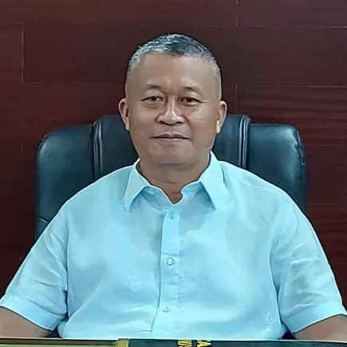

Local Officials of Dauin

Mayor Galicano "Galic Matic" A. Truita
Leading the municipality with dedication and service to the community.
Vice Mayor Alvin V. Truita
Assisting the mayor and supporting local governance initiatives.
Representative Janice Degamo
Responsible for legislative duties and community development projects.
Municipal Councilor Jonah Alar
Focused on social services and public welfare programs in Dauin.